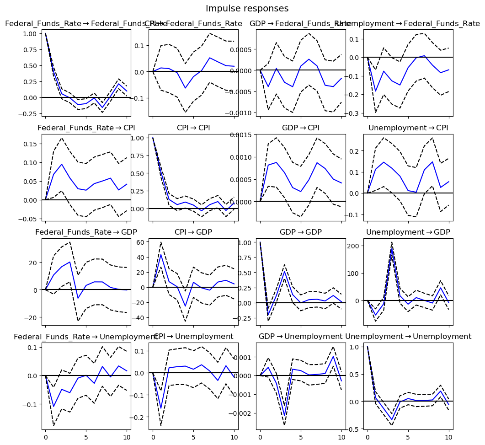
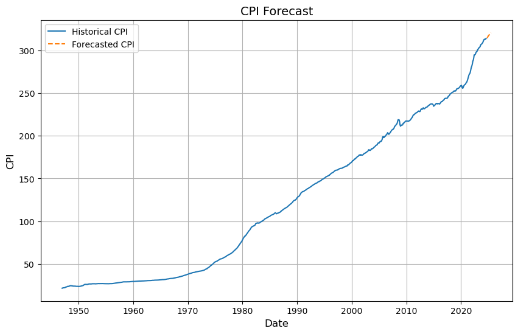
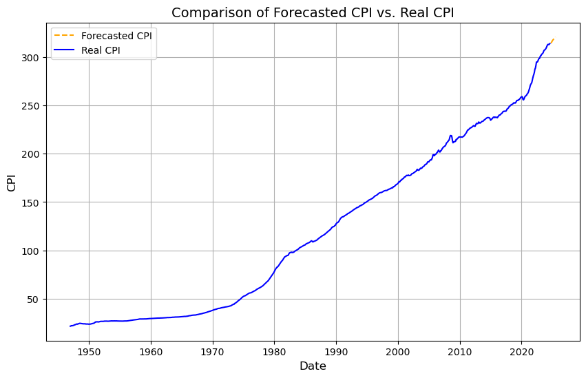
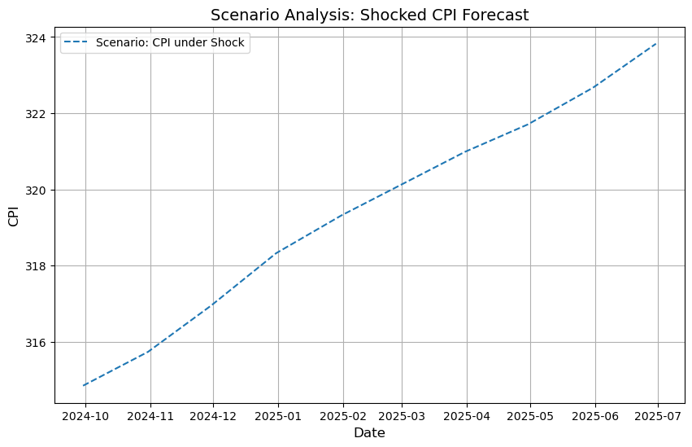

Visuals and Analysis
Comparison of Forecasted CPI vs. Real CPI
This graph compares the forecasted Consumer Price Index (CPI) with the actual CPI over time. The forecasted CPI (dashed line) closely follows the general trend of the real CPI (solid line), validating the model's ability to capture long-term inflation trends. However, deviations between the two lines highlight periods where unexpected economic factors, such as supply chain disruptions or fiscal policy changes, influenced inflation beyond the model's predictions. This visual underscores the importance of considering external factors in monetary policy decision-making.
CPI Forecast
The CPI forecast chart provides a closer look at the historical and projected movements of the Consumer Price Index. The model's forecast (dashed line) aligns with past CPI trends, indicating its effectiveness in anticipating inflationary patterns. However, slight underestimations during economic booms suggest the need for model adjustments during periods of rapid economic growth. This reinforces the concept that monetary policy must be adaptable to unforeseen economic shifts.
Impulse Response Functions
The Impulse Response Functions (IRFs) depict how a shock to the federal funds rate affects key economic variables over time. Each panel shows the response of one variable (e.g., CPI, GDP, unemployment) to a one-standard-deviation shock in another variable (e.g., federal funds rate). The results indicate that a positive shock to the federal funds rate initially reduces inflation and GDP, while unemployment temporarily increases. These visualizations provide crucial insights into the timing and magnitude of monetary policy effects, helping to inform more precise policy actions.
Scenario Analysis: Impact of a 1% Increase in the Federal Funds Rate
This scenario analysis simulates a 1% increase in the federal funds rate and its subsequent effects on CPI, GDP, and unemployment. The analysis demonstrates that the initial tightening effect slows inflation but at the cost of reduced GDP growth and higher unemployment. This visual aids in understanding the complex trade-offs inherent in monetary policy decisions and highlights the need for balanced approaches that minimize adverse impacts on the economy.
Forecast Error Variance Decomposition

The Forecast Error Variance Decomposition chart breaks down the proportion of variance in each variable that can be attributed to shocks in other variables. For example, a significant portion of the forecast variance in GDP can be attributed to changes in the federal funds rate, emphasizing the interconnected nature of these economic indicators. This analysis helps policymakers understand which variables exert the most influence over time, guiding more targeted interventions.